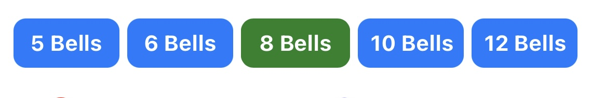
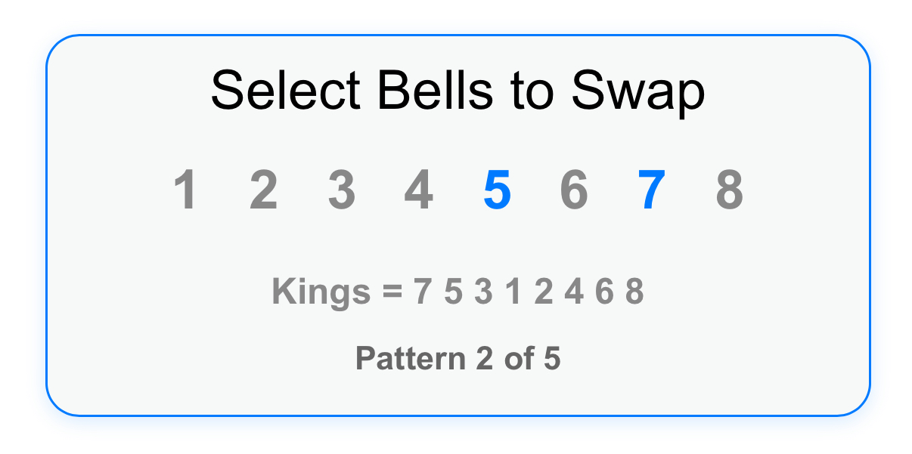
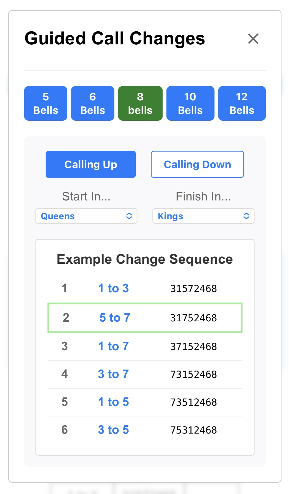
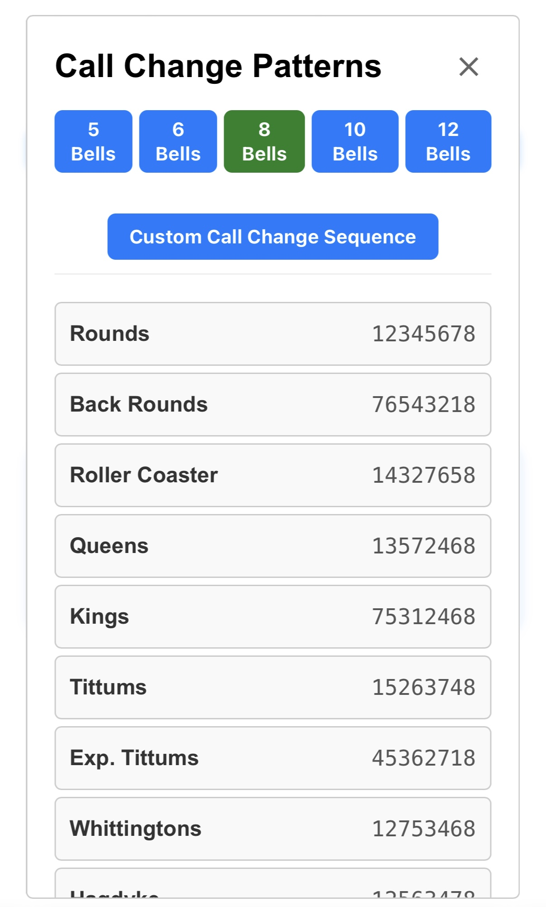
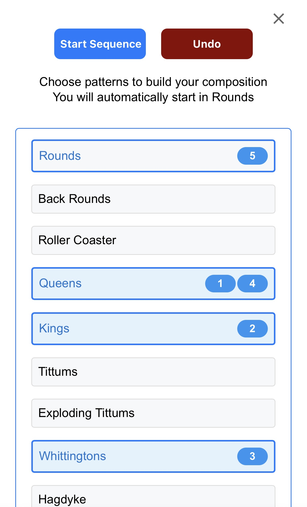
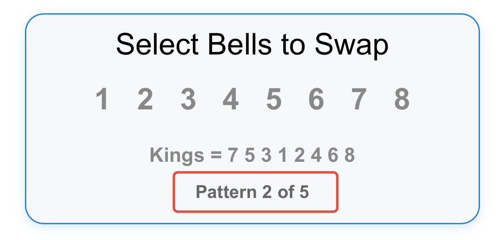
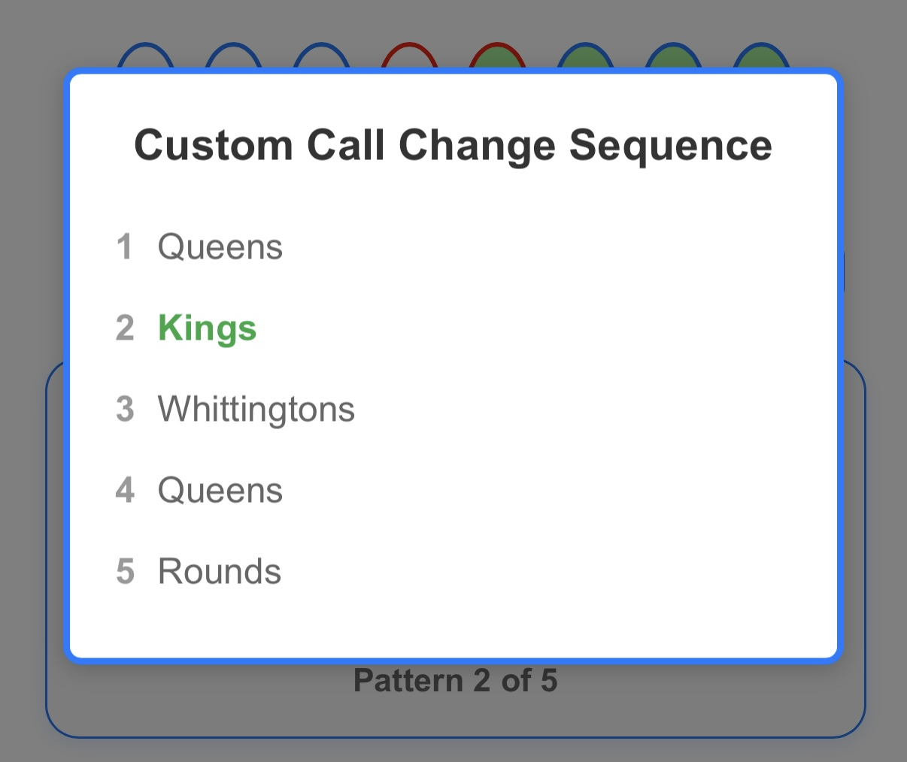
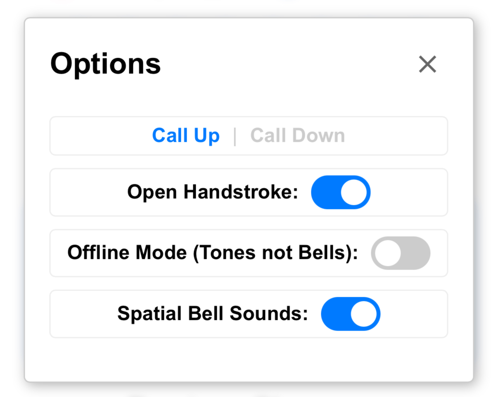
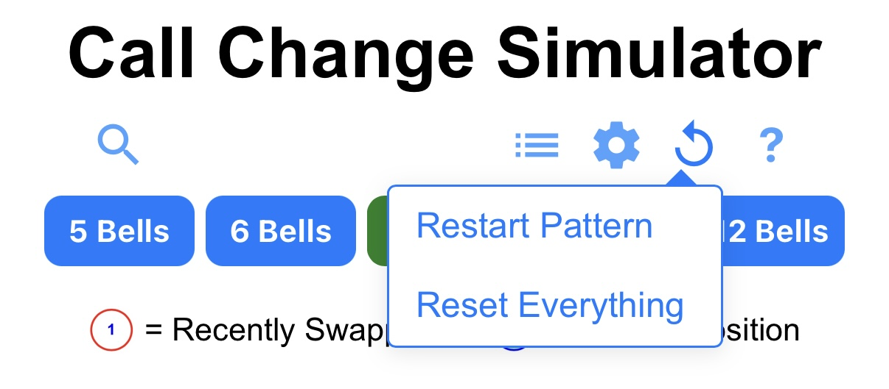

At the top of the simulator, you'll find buttons for selecting the
number of bells (5, 6, 8, 10, or 12). Different call change patterns
are available for different numbers of bells

Icons and Controls
Underneath the bell number buttons are the icons for various features
and settings:
Reference Box - View and ring guided call change sequences using
examples
Patterns Box - Choose a single call change pattern or create a
custom call change sequence
Target Icon - Jump Change to the pattern shown in the patterns
dropdown
Reset Icon - Restart a pattern sequence or return to default
settings
Help Icon - You're already here!
Current Order Display
Shows the current order of bells, with visual indicators for:
1
2
3
Default state (blue border)
Recently swapped bells (red border)
Bells in their correct position for the target pattern (light green
background)
Bell Number Naming Conventions
Bell numbers for bells 10, 11 and 12 are displayed in the standard
single character format:
Bell 10 = 0
Bell 11 = E
Bell 12 = T
This naming conventionalso applies to other features where the bell
order is displayed:
The Reference Box
The Patterns Box
The Pattern Prompt
The Change History table
Pattern Selection
The pattern dropdown allows you to select a target pattern. When a
pattern is selected, any bells already in the correct position will be
highlighted green. Other bells will be highlighted in green as they
are moved into their correct position
If the Jump Change icon (target symbol) is displayed the bells will be
reset to the current pattern when you click the icon
Playback Controls
Three buttons manage playback - they are shown and hidden as
necessary:
Go
Rounds
Stand
Go - Starts bell sound playback
Rounds - Resets the bells to rounds order
Stand - Stops bell sound playback
Bell Selection Area
The bell selection area is where you choose which bells to swap and
view prompts for patterns and pattern sequences:

Bell Selection Icons:
Each bell is represented by a number
These bell numbers will always be fixed in ascending order
When you select the first bell, it gets highlighted in blue
The second bell must be selected in accordance with the rules
for your chosen calling style
If your selection is valid, it will be applied at the next
handstroke if the bells are playing, or immediately if not
If your selection is not valid, an error message will be
displayed explaining what went wrong
When calling down, a "Lead" button will be visible in addition
to the bell numbers
Additional Elements:
The pattern prompt appears below the bell icons. It shows the
correctbell order for any pattern selected in the pattern
dropdown
When a pattern sequence is active, a sequence counter appears
showing where you are in the sequence
This area is also where error messages are displayed
Icons and Dialog Boxes
Reference Box
The Reference Box has been built to show you examples of how you might
get from one call change pattern to another
When you open it you'll see the following:

Bell Number Selection Buttons
The Reference Box bell number will always inherit the current
number of bells in the main simulator when it opens
You can use these buttons to view patterns on different numbers
of bells. Changing this bell number DOES NOT change the number
of bells selected in the main simulator
Calling Style Buttons
Choose whether you want to use the "Calling Up" or "Calling
Down" style
This setting is synchronised with the main simulator's options
When the calling style is changed, the format of any calls being
displayed will automatically switch to match the calling style
selected
Pattern Selection
Set your Start and Finish patterns in the two dropdown menus
Example Change Sequence
Shows an example of how you might get from the start pattern to
the finish pattern
Displays the following information:
The call (e.g., "2 to 1")
The resulting pattern after the call has been made
Which line in the example, if any, matches the current bell
order in the simulator (matches are highlighted with a green
border)
Patterns Box
The Patterns Box allows you to select a single call change pattern or
create a custom call change sequence
When you open it, you'll see the following:

Custom Call Change Sequence button:
Used to open the Custom Call Change Sequence builder
Pattern Selection Window:
A list of available patterns for the current number of bells
Each pattern shows its name and the actual bell order for that
pattern
Clicking a pattern immediately loads it into the simulator
Custom Call Change Sequence Builder
This is where you can build custom sequences of two or more patterns:

Sequence Builder Controls:
Start Sequence button to begin the sequence (displayed once a
pattern has been added)
Undo button to remove the last added pattern (displayed once a
pattern has been added)
List of available patterns to select from
Available Functionality:
You can use unlimited numbers of patterns in a sequence
Patterns can be used more than once in the sequence
The undo button removes the last pattern added
The sequence numbers for each selected pattern are displayed on
the right-hand-side
When your sequence is ready, click "Start Sequence" to load it
into the simulator
Custom Call Change Sequences in the main simulator
Once you start a sequence it will be loaded into the main simulator:
Sequence Counter:
Appears in the main simulator when a sequence is active
Shows the current pattern number in the sequence
Click to view the full sequence in a popup

Sequence Popup:
Displays the complete sequence of patterns
Highlights the current pattern in green
Can be dismissed by clicking or pressing Escape

Jump Feature
The Jump feature (target icon) allows you to:
Instantly move to a specific pattern
Practice transitions between call change patterns without the need
to start in rounds
Combine this feature with the Reference Box functionality
Options
The Options menu provides important settings that affect how the
simulator works:

Calling Style:
Select whether you want to "Call Up" or "Call Down"
Open Handstroke:
Choose whether or not to have a handstroke gap
Offline Mode:
Choose realistic bells sounds or generated tones
Spatial Sound:
Adds subtle 3D stereo effect - best used with headphones
Resetting
The simulator provides two main reset options:

Restart Pattern:
Available whenever a pattern sequence is active
Resets an active pattern sequence to the start
Reset Everything:
Available at any time
Resets the entire simulator to its initial state
Basic Usage
Change Calling
The simulator can be used with or without bell playback:
Without Bells:
Allows you to do silent practice while retaining all
functionality of the simulator
Ideal for following along at practices or where sounds are not
appropriate
Bell selections and other changes are applied immediately
With Bells:
Use with sound for a more realistic experience
Hear the effect of your changes and become familiar with the
sound of specific patterns
Try alternative routes from one change to another to find the
most musical option
Higher numbers of bells ring slightly faster
Bell selections and other changes are applied at the next
handstroke
To call changes:
Use the Go button to begin playback if desired
Select the bells you want to swap according to the rules of your
chosen calling style
The simulator will check your selection is permitted
If it's valid, the change will be applied to the bells and
everything will update, ready for your next selection
If not, an appropriate error message will immediately be displayed
at the bottom of the bell selection area
Top Tip: Remember to follow the rules for your selected calling style
Using Playback Controls
The simulator provides three main playback control buttons:
'Go' Button:
Starts the ringing sequence
Only visible when playback is not already happening
Once the bells begin ringing, the 'Go' button will be hidden
'Stand' Button:
Stops the ringing sequence
Only visible when playback is already happening
When clicked, a 'Stand' notification will be displayed
The bells will stop at the next handstroke
'Rounds' Button:
Only visible when the bells are not in Rounds
When clicked, a 'Rounds' notification will be displayed
The bells will return to rounds at the next handstroke
Important Notes:
Stand and Rounds actions are applied at the next handstroke
If the bells are ringing, a notification will appear showing the
pending action
The notification will remain visible until the action is applied at
the next handstroke
You cannot perform a new action while the previous action is still
in progress
Options
The Options menu provides important settings that affect how the
simulator works:
Calling Style:
Choose whether you want to "Call Up" or "Call Down"
Can be changed at any time, regardless of whether playback is in
progress
Selecting 'Call Down' will add the 'Lead' button to the bell
selection area
Changes are synchronised with the Reference Box
Open Handstroke:
Toggle to enable/disable open handstroke
When enabled, the simulator will pause briefly at handstroke
Spatial Sound:
Toggle to enable/disable 3D spatial sound
When enabled, bell sounds will appear to come from different
positions
Creates a more realistic ringing experience
Offline Mode:
Toggle to enable/disable offline mode
Note: The simulator still requires an initial internet
connection to load
Once loaded, all features remain available in offline mode
Working with Patterns
You can work with patterns in several ways:
Single Pattern Selection:
Use the pattern dropdown in the main simulator to select a
target pattern
Bells will be highlighted in green when they reach their correct
position
Alternatively, use the Patterns Box to select and load a pattern
directly
Pattern Pairs:
Use the Reference Box to get suggested routes between patterns
The Reference Box shows the most efficient sequence of changes
to reach your target pattern
This is particularly helpful when learning new patterns or
practicing transitions
Pattern Sequences:
Use the Pattern Sequence Builder to create sequences with
multiple patterns
You can include the same pattern multiple times in a sequence
The simulator will automatically progress through the sequence
as you achieve each pattern
Pattern Sequences
To create and use pattern sequences:
Starting a New Sequence:
Open the patterns box from the icon in the main simulator
Click the "Custom Call Change Sequence" button to open the
sequence builder
Building the Sequence:
Click on patterns in the order you want them to appear
Each pattern you click will be added to the sequence
Use the Undo button to remove the last pattern if needed
You can add as many patterns as needed
Starting the Sequence:
Click "Start Sequence" when you're ready to begin
The sequence will be immediately available in the main simulator
The bells will always begin in Rounds
Make call changes in the simulator to achieve each pattern in
sequence
The simulator will automatically progress to the next pattern
when you achieve the current one
Use the Reference Box for guidance on the current change if you
want ideas
Viewing your progress:
The sequence counter will show you where you are in the sequence
(1 of 3 for example)
Click the sequence counter in the main simulator to view the
popup
The popup shows your entire sequence with the current pattern
highlighted in green
Click anywhere on the screen to hide the popup
Using the Reference Box
The Reference Box helps you learn call change sequences:
Opening the Reference Box:
Open the Reference Box using the magnifying glass icon in the
main simulator
Select your desired number of bells (5-12)
Choose your preferred calling style (Up/Down)
Set up the Reference Patterns:
Select your start and end patterns from the dropdowns
The sequence will automatically update to show the required
changes
Reference Box Uses:
Load pairs of patterns to see the most efficient route
Compare the calls needed for different calling styles
Use the Reference Box example changes as a guide while
practicing in the main simulator
Help navigate through a pattern sequence if you are unsure of
where to start with a specific pair of patterns
Important Notes:
The Reference Box will always load with the same number of bells as
are active in the simulator
The content of the Reference Box will remain available when you come
back to it again, unless you re-open the Reference Box with a
different number of bells
You can open and close the Reference Box as many times as needed to
complete your changes as long as you are still using the same number
of bells
The information and calls displayed update automatically when you
change any settings
The example sequence shows an efficient path between your selected
patterns, but not the only one! If you know a more musical option
please let me know!
Using the Jump Feature
The Jump feature allows you to instantly move to any pattern:
First, select your desired pattern from the pattern dropdown in the
main simulator
Click the target icon in the main simulator
The simulator will instantly update to show the selected pattern
All bells will be in their correct positions for the new pattern
Important Notes:
The Jump feature is particularly useful for practicing specific
patterns or transitions
You can use it in combination with the Reference Box to practice
specific sequences
Jumping to a new pattern adds a "Jump" entry to your change history,
preserving all previous entries
Reset Options
The simulator provides two main reset options:
Restart Pattern:
Only available when a pattern sequence is active
Displays a Restart notification until the next handstroke if the
bells are playing
Resets the bells to rounds
Clears the change history except for the initial "Go!" entry
Maintains the current pattern sequence but resets it to the
start
If playback is active, the reset will be queued and applied at
the next handstroke
Reset Everything:
Available at any time
Resets the pattern dropdown to its default state
Resets the bells to rounds order
Clears the change history except for the initial "Go!" entry
Clears any active pattern sequence
Removes the pattern sequence counter from the display
If playback is active, a notification will appear showing the
pending reset
The reset will be queued and applied at the next handstroke
Important Notes:
Both reset options can be used whether or not playback is active
When a reset is requested during playback, a notification will
appear
The notification will remain visible until the reset is applied at
the next handstroke
You cannot trigger a reset while another action is still pending
Change History
The simulator records your actions in a table at the bottom of the
screen:
Change History Layout:
Three columns are displayed
The columns show the call that has just been made, the new order
of the bells and a pattern name if a named pattern has been
achieved
The initial state of the table will always show "Go!" followed
by the bells in rounds order
New changes are added to the top of the table as they are made
Using the Rounds button does not clear the table but adds a new
"Rounds" entry
Using the Jump Change function adds a "Jump" entry showing the
new pattern
Resetting the simulator or reloading the page will clear the
table